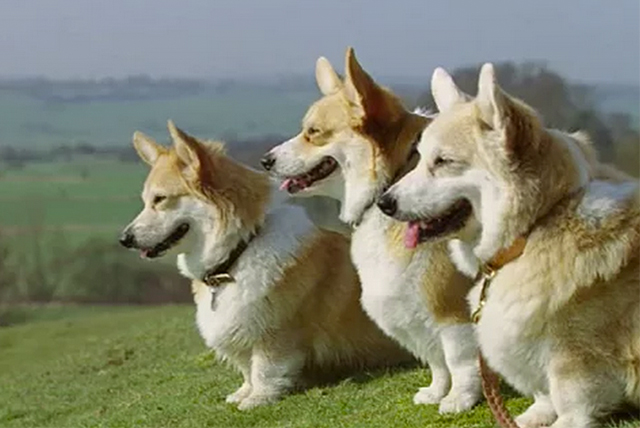
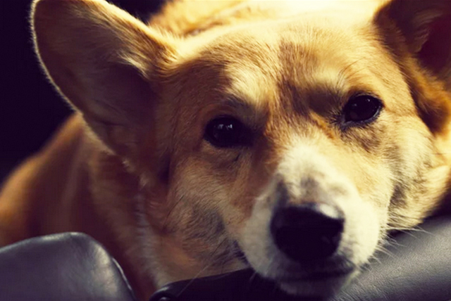
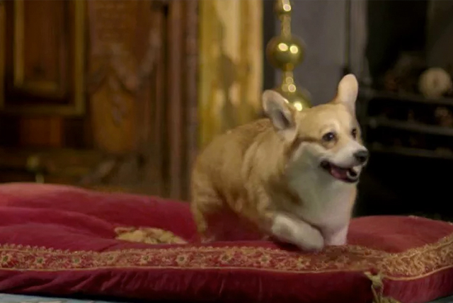
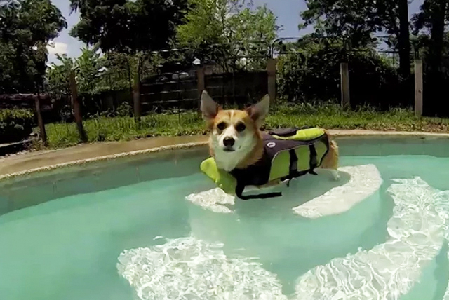
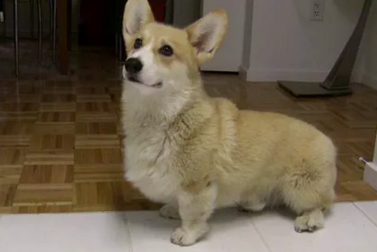

-
Freeview Corgis
From Vimeo user: AGame. To celebrate the Royal Wedding, we see the journey of three Corgi friends who travel across the country to watch the ceremony on Freeview HD.

-
Portrait of a Corgi
From Vimeo user: Rachel Marie Smith. For my mother. Happy Mother's Day! Starring: Angel Smith (Rescued from a shelter!) Filmed by: Rachel Marie Smith. Camera: Canon 60D. Lens: Canon 50mm 1.8

-
Ma'amite. Corgi
From Vimeo user: David and Jonathan.

-
Corgi Pool Party
From Vimeo user: Larsgoes2hell. First time playing in the pool with the GoPro3 Silver Edition.

-
Dinner Time
From Vimeo user: truman corgi. Pop up video style.
